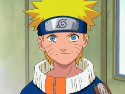

Sinopse:
A história principal se foca em Naruto e seu desenvolvimento quanto ninja, junto
com os seus amigos. Também se centra nas interações entre estes e a influência do ambiente em
suas personalidades. Conforme transcorre a série, Naruto se relaciona com Sasuke Uchiha e Sakura
Haruno, com quem forma o “Time 7”, juntamente com o sensei Kakashi Hatake. Cabe mencionar que
Naruto confia muito neles assim como em em outros personagens que irá conhecendo mais adiante.
Enquanto eles aprendem novas habilidades e conhecem novas pessoas e lugares em suas missões,
Naruto luta por seu sonho de se tornar o líder máximo de sua aldeia (Hokage) e ser reconhecido
como alguém importante. No início, a série se enfoca nos integrantes do Time 7, Naruto, Sasuke
e Sakura. Pouco depois, Orochimaru (um dos vilões mais procurados) ataca a Aldeia Oculta da
Folha, assassinando o Terceiro Hokage em um ato de vingança pessoal. Isso acaba desencadeando
que Jiraiya, um dos três ninjas legendários (Sannins), inicie a busca da sua antiga companheira
de equipe Tsunade para designá-la como a Quinta Hokage. Durante a sua busca é revelado que Orochimaru
quer encontrar Sasuke (a quem conhece por suas técnicas de dōjutsu) para oferecer-lhe o poder que
tanto deseja para matar seu irmão Itachi Uchiha, responsável pelo assassinato de todo seu clã.
Sasuke aceita a proposta de Orochimaru e vai treinar com ele, traindo a sua aldeia. Enquanto isso,
Naruto decide fazer algo a respeito, e então resolve deixar a aldeia junto com Jiraiya durante dois
anos e meio com o objetivo de treinar e preparar-se para a próxima vez que encontrar Sasuke, a quem
tentará salvar.
Autor: Masashi Kishimoto
Adaptações: Naruto Shippuden (2007)
Gêneros: Ficção de aventura, Fantasia, Filmes de artes marciais
| Naruto | Episódios |
| Clássico | |
| Shippuden |
